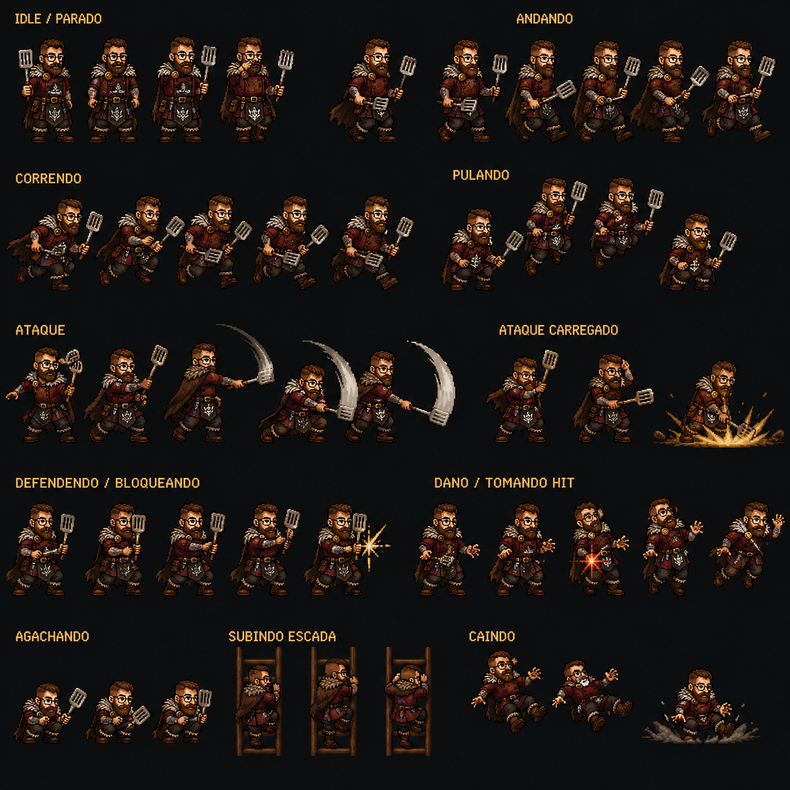
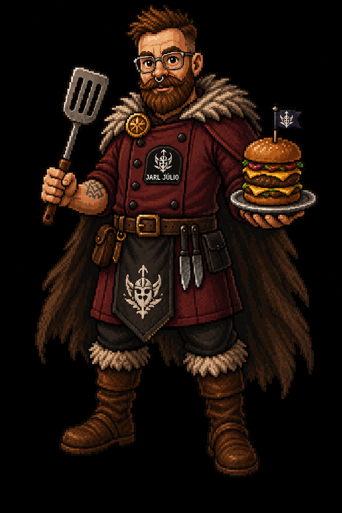
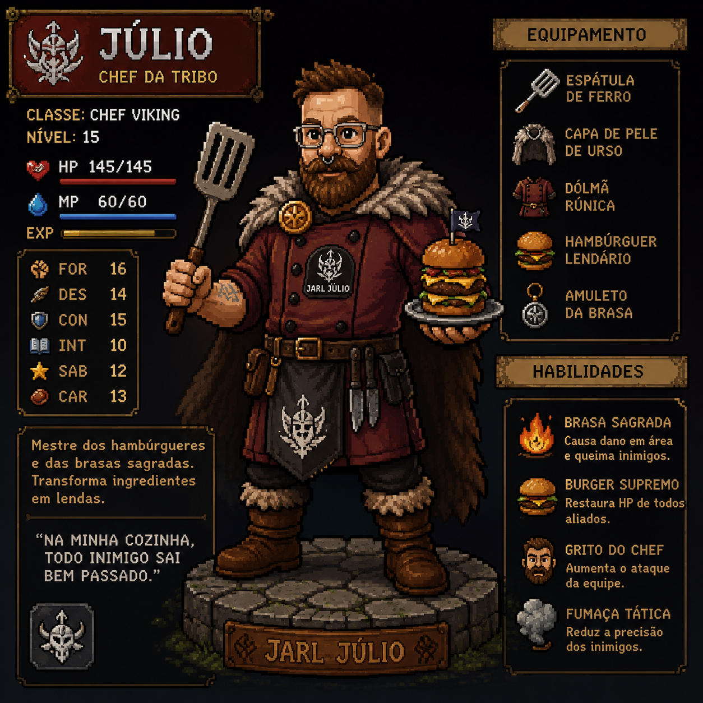
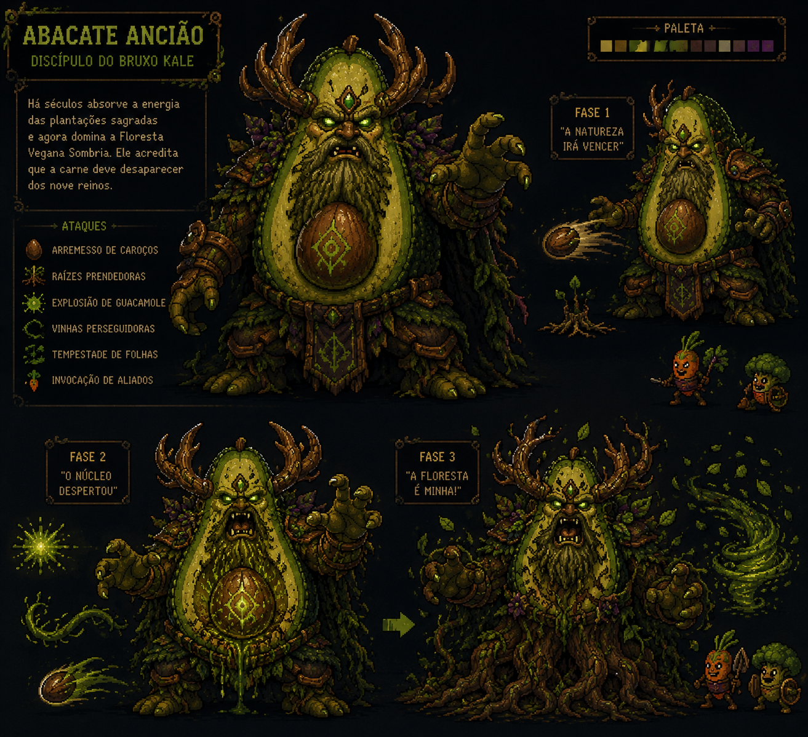
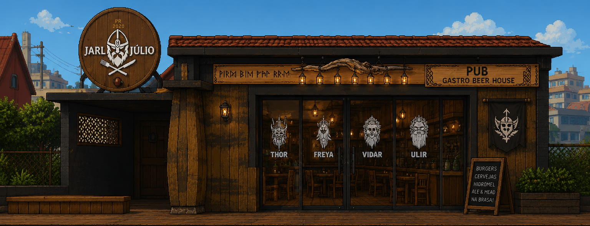
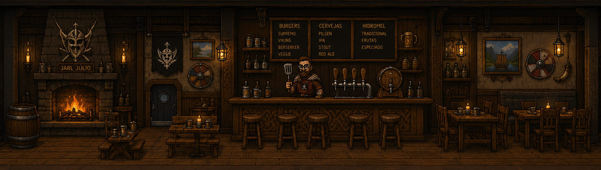

A simple 2D browser game. Jarl Júlio — Viking gastropub chef — battles food-themed bosses. Everything you need to start building, organized below.
Open this folder in Claude Code, read README.md first, then build the game
against these assets. Low-res previews and a distorted duplicate live in reference/ — not for shipping.
. ├── README.md ← read first (full spec) ├── asset-browser.html ← this page └── assets/ ├── animations.json player animation map ├── characters/julio/ │ ├── julio-spritesheet.png 1254×1254 · all player anims │ ├── julio-portrait.png 1024×1536 · hero render │ └── julio-character-card.png 1254×1254 · stat reference ├── bosses/abacate-anciao/ │ └── abacate-anciao-sheet.png 1313×1198 · boss + 3 phases └── backgrounds/ ├── pub-jarl-julio.png 1536×1024 · full original ├── pub-exterior.png 1536×589 · storefront / hub └── pub-interior.png 1536×435 · bar / shop scene
The full spritesheet, hero render and stat card. The sheet is a labeled concept layout, not a uniform grid — slice each row into frames (or key out the near-black background) before use.



Eleven states laid out top→bottom across the sheet. Mirrored in
assets/animations.json for the player state machine.
| State | Key | Frames | Loop | Notes |
|---|---|---|---|---|
| Idle | idle | 4 | yes | Standing, spatula in hand |
| Walk | walk | 6 | yes | Cape flowing |
| Run | run | 5 | yes | Leaning forward |
| Jump | jump | 4 | no | Crouch → launch → apex → descend |
| Attack | attack | 6 | no | Spatula swing reads as a sweeping arc |
| Charged attack | attack_charged | 3 | no | Wind-up → ground slam + spark FX |
| Block | block | 4 | no | Guard stance, ends with shield spark |
| Hurt | hurt | 4 | no | Knockback + red impact |
| Crouch | crouch | 3 | no | Ducking |
| Climb | climb | 3 | yes | On a ladder |
| Fall | fall | 3 | no | Airborne → hard landing + dust |
Transcribed from the character card — tune the numbers to your balance.
"Discípulo do Bruxo Kale." A druidic avocado titan who rules the Dark Vegan Forest and wants meat erased from the nine realms. Three escalating phases + two minion types.

The original was one image of two stacked scenes; split into a reusable exterior and interior. Menu lore: Burgers (Supremo/Viking/Berserker/Veggie), Beers (Pilsen/IPA/Stout/Red Ale), Mead (Tradicional/Frutas/Especiado). Taps: Thor, Freya, Vidar, Ulir.

